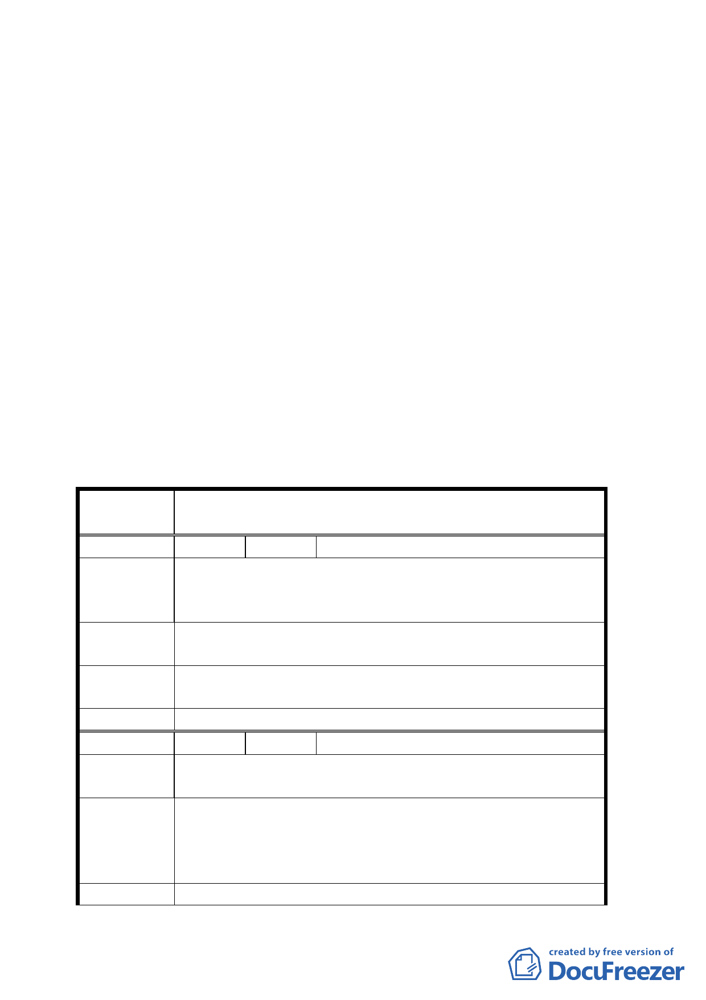

書圖提委員會議審議。經市府都市發展局以九十四年八月
三日北市都綜字第 09432806100 號函送「變更臺北市文山
區木柵路五段附近地區細部計畫案」修正書圖暨委員意見
辦理情形，提會審議。
決議：
一、有關進行區段徵收作業前土地地價調整問題，請地政處
妥為處理。
二、有關計畫內容請都市發展局就委員意見（含都市設計管
制要點內容及交通動線）調整修正後以書面修正表提下
次會議報告。
三、公民或團體所提意見審決如后附綜理表。
臺北市都市計畫委員會公民團體所提意見綜理表
案 名 擬訂臺北市文山區木柵路五段附近地區細部計畫案
編 號 １ 陳情人 周照壽 等 86 人
因應日後大台北商圈及北宜旅遊生態之連動性，本計劃商
陳 情 理 由 業區將扮演住宿、餐飲、休閒…之「中繼站」，目前訂定之
容積率 160%將不符使用。
建議辦法
建請容積率提高至 225%、建蔽率不變，仍可符合低密度之
原意，且高度也符合 5 樓以下之規定。
專案小組
結論
本案容積率維持 160%。
委員會決議 同意依專案小組審查結論辦理。
編 號 ２ 陳情人 陳登旺
陳情理由
此計劃執行後是否所有住戶均有能力擁有他們的房子，是
否有評估過。
1.若比現狀差，那我們這些弱勢族群住戶希望保持現狀。
建議辦法
2.擴大計畫，整合掩埋區、焚化爐回饋設施（溫水游泳池）、
公園森林化，原有平面公園改為住宅區興建國宅，發給
居民，讓原住民實際受惠。
專 案 小 組 同意發展局所提方案及修正範圍。
一四